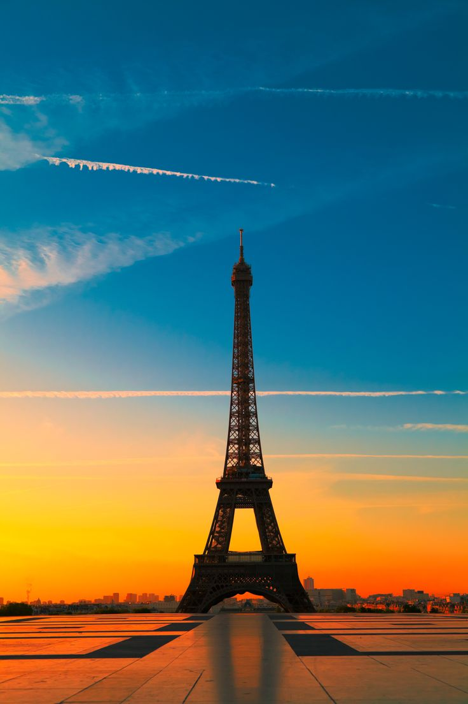
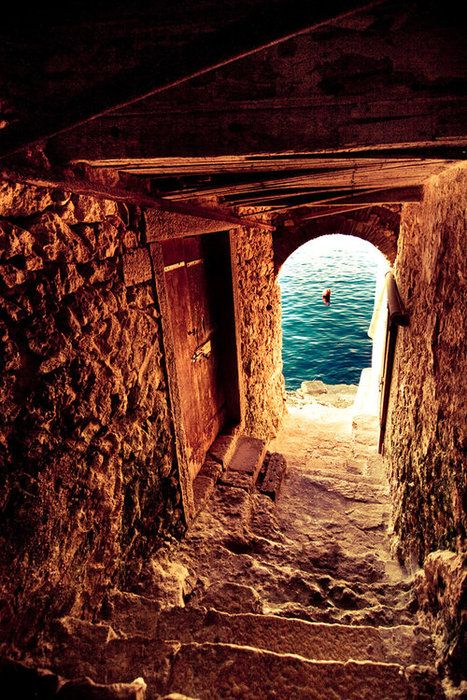
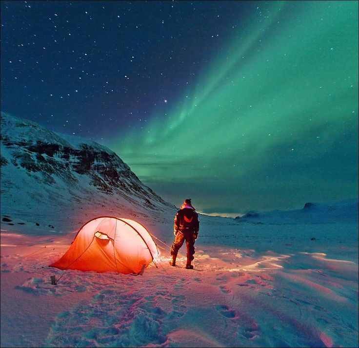

Esta foi minha viagem para Paris. Q máximo está foto, né :-)

Nas minhas últimas férias. Bem contêporanio esta vista. Nice!!

Sou apaixonada por fotos e fiz esta loucura. Pretendo voltar! #auroravoltarei

Comprei minha Fujfilm profissional, que linda este primeiro registro nela. #sesentindoapaixonada